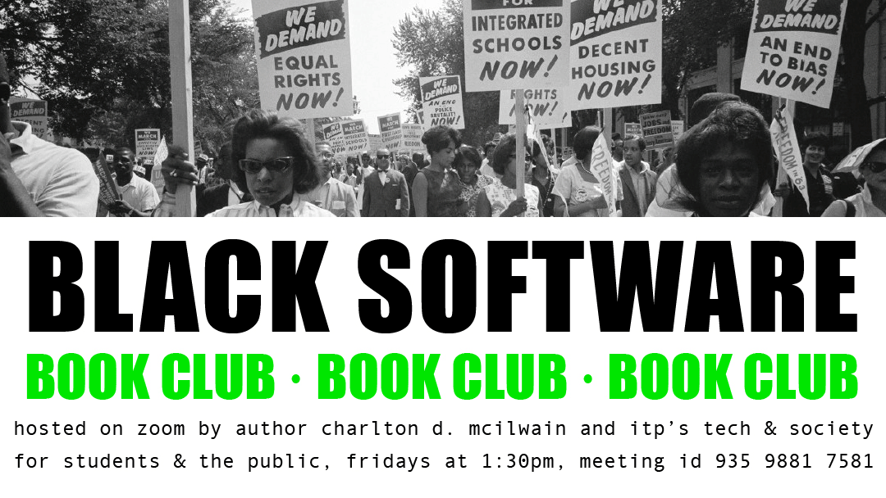

BLACK SOFTWARE BOOK CLUB

The Tech & Society Book Club is currently reading Black Software by Charlton D. McIlwain
with disucssions facilitated by the author himself -
please join us!
Date and Time
The book club meets on Fridays at 1:30pm Eastern Time on Zoom starting October 16.
Please fill out the registration form in order to sign up and receive the zoom link: Register Here
The Book
Black Software is available for free through the NYU library system! Under the View
Online / EBook Central option you can choose to download the book (pdf/epub), read it online or
download chapter pdfs. Please let us know if you have problems accessing it.
If you are planning to buy the book, we encourage you to support your independent, local,
Black-owned businesses (and maybe buy a few more books too while you're at it!?!)! Want a list of
some places to start? Let us know!
What to Read
Here is what we are reading this week!
- October 23: Chapters 1 - 2
- October 30: Chapters 3 - 5
- November 6: Chapters 6 - 8
It is completely okay if you have not done the readings! We are striving to have a conversation that is meaningful regardless.